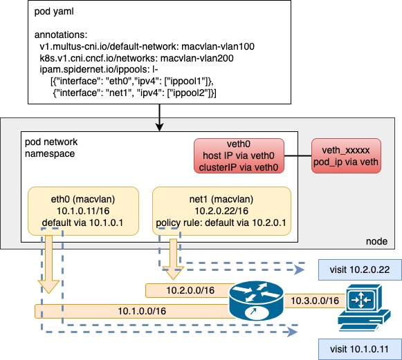

Coordinator
Spiderpool 内置一个叫 coordinator 的 CNI meta-plugin, 它在 Main CNI被调用之后再工作，它主要提供以下几个主要功能:
- 解决 Underlay Pod 无法访问 ClusterIP 的问题
- 在 Pod 多网卡时，调谐 Pod 的路由，确保数据包来回路径一致
- 支持检测 Pod 的 IP 是否冲突
- 支持检测 Pod 的网关是否可达
- 支持固定 Pod 的 Mac 地址前缀
下面我们将详细的介绍 coordinator 如何解决或实现这些功能。
注意:
如果您通过
SpinderMultusConfig CR帮助创建 NetworkAttachmentDefinition CR，您可以在SpinderMultusConfig中配置coordinator(所有字段)。参考: SpinderMultusConfig。
Spidercoordinators CR作为coordinator插件的全局缺省配置(所有字段)，其优先级低于 NetworkAttachmentDefinition CR 中的配置。 如果在 NetworkAttachmentDefinition CR 未配置, 将使用Spidercoordinators CR作为缺省值。更多详情参考: Spidercoordinator。
解决 Underlay Pod 无法访问 ClusterIP 的问题
我们在使用一些如 Macvlan、IPvlan、Sriov 等 Underlay CNI时，会遇到其 Pod 无法访问 ClusterIP 的问题，这常常是因为 underlay pod 访问 CLusterIP 需要经过在交换机的网关，但网关上并没有去往 ClusterIP 的路由，导致无法访问。
配置 coordinator 运行在 underlay 模式
在默认情况下 mode 的值为auto(spidercoordinator CR 中 spec.mode 为 auto), coordinator 将通过对比当前 CNI 网卡是否是
eth0, 如果是，则自动判断为 Underlay 模式。 如果当前网卡不是eth0，那么 coordinator 将检测 Pod 中是否存在veth0网卡，如果是，则判断为 Underlay 模式。
当您的业务部署在"传统网络"或者 IAAS 环境上时，业务 Pod 的 IP 地址可能直接从宿主机的 IP 子网分配。应用 Pod 可直接使用自己的 IP 地址进行东西向和南北向通。
该模式的优点有:
- 没有 NAT 映射的干扰，Pod 最大程度保留源 IP
- 能够利用底层网络设备对 Pod 做访问控制
- 不依赖隧道技术，Pod 网络通信的性能得到显著提高
使用注意:
- Pod 访问集群东西向流量(ClusterIP)时，流量会先跳给本地宿主机，本地宿主机使用自己的IP去访问目的pod，因此，流量的转发可能借助外部路由器进行三层跳转，因此，请确保相关三层网络的通达。
对于这个问题，我们可以通过设置 coordinator 运行在 underlay 模式解决。在此模式下，coordinator 插件将创建一对 Veth 设备，将一端放置于主机，另一端放置与 Pod 的 network namespace 中，然后在 Pod 里面设置一些路由规则，
使 Pod 访问 ClusterIP 时从 veth 设备转发。Pod 访问集群外部目标时从 eth0 或 net1 转发。

下面将通过一些例子介绍:
apiVersion: k8s.cni.cncf.io/v1
kind: NetworkAttachmentDefinition
metadata:
name: macvlan-underlay
namespace: kube-system
spec:
config: |-
{
"cniVersion": "0.3.1",
"name": "macvlan-underlay",
"plugins": [
{
"type": "macvlan",
"master": "ens160",
"mode": "bridge",
"ipam": {
"type": "spiderpool"
}
},{
"type": "coordinator",
"mode": "underlay"
}
]
}
- mode: 指定 coordinator 运行在 underlay 模式。或默认为 auto 模式，您只需要在 Pod 注入注解:
v1.multus-cni.io/default-network: kube-system/macvlan-underlay, coordinator 将会自动判断 mode 为 underlay。
当以 macvlan-underlay 创建 Pod，我们进入到 Pod 内部，看看路由等信息:
root@controller:~# kubectl exec -it macvlan-underlay-5496bb9c9b-c7rnp sh
kubectl exec [POD] [COMMAND] is DEPRECATED and will be removed in a future version. Use kubectl exec [POD] -- [COMMAND] instead.
#
# ip a show veth0
5: veth0@if428513: <BROADCAST,MULTICAST,UP,LOWER_UP> mtu 1500 qdisc noqueue state UP group default
link/ether 4a:fe:19:22:65:05 brd ff:ff:ff:ff:ff:ff link-netnsid 0
inet6 fe80::48fe:19ff:fe22:6505/64 scope link
valid_lft forever preferred_lft forever
# ip r
default via 10.6.0.1 dev eth0
10.6.0.0/16 dev eth0 proto kernel scope link src 10.6.212.241
10.6.212.101 dev veth0 scope link
10.233.64.0/18 via 10.6.212.101 dev veth0
- 10.6.212.101 dev veth0 scope link: 10.6.212.101 是节点的 IP,确保 Pod 访问本节点时从 veth0 转发。
- 10.233.64.0/18 via 10.6.212.101 dev veth0: 10.233.64.0/18 是集群 Service 的 CIDR, 确保 Pod 访问 ClusterIP 时从 veth0 转发。
这个方案强烈依赖与 kube-proxy 的 MASQUERADE 。 在一些特殊的场景下，我们需要设置 kube-proxy 的 masqueradeAll 为 true。
在默认情况下，Pod 的 underlay 子网与集群的 clusterCIDR 不同， 无需开启
masqueradeAll, 它们之间的访问将会被 SNAT。但如果 Pod 的 underlay 子网与集群的 clusterCIDR 相同，那我们必须要设置masqueradeAll为 true.
配置 coordinator 运行在 overlay 模式
与 Underlay 模式相对应，我们有时候并不关心集群部署环境的底层网络是什么，我们希望集群能够运行在大多数的底层网络。常常会用到如Calico 和 Cilium 等CNI, 这些插件多数使用了 vxlan 等隧道技术，搭建起一个 Overlay 网络平面，再借用 NAT 技术实现南北向的通信。
在默认情况下 mode 的值为auto(spidercoordinator CR 中 spec.mode 为 auto), coordinator 将通过对比当前 CNI 调用网卡是否不是
eth0。如果不是，确认 Pod 中不存在veth0网卡，则自动判断为 overlay 模式。
此模式的优点有:
- IP 地址充沛，几乎不存在地址短缺的问题
- 兼容性强，能够运行在大多数底层网络下
但这种模式下存在以下的问题:
- 因为 calico 会用到一些封装技术，性能会得到影响
- 大多都不支持 Pod 的 IP 地址固定
- 如果通过 Multus 为 Pod 附加多张网卡时，Pod 通信时常常遇到数据包来回路径不一致的问题，导致 Pod 无法正常通信
当 Pod 附加了多张网卡时，极大可能出现 Pod 通信数据包来回路径不一致的问题。如果数据链路上存在一些安全设备，由于数据包的来回路径不一致，流量可能被安全设备认为是 "半连接"(没有 TCP SYN 报文的记录，但收到 TCP ACK 报文 )，在这种情况下，安全设备会阻断掉该连接，造成 Pod 通信异常。
上述问题我们可以通过设置 coordinator 运行在 overlay 模式解决。 在此模式下，coordinator 不会创建 veth 设备，而是设置一些策略路由，确保 Pod 访问 ClusterIP 时从 eth0(通常由 Calico、Cilium等CNI创建) 转发，Pod 访问集群外部目标时从 net1 (通常由 Macvlan、IPvlan 等CNI创建) 转发。

我们通过一些例子来介绍这个模式:
apiVersion: k8s.cni.cncf.io/v1
kind: NetworkAttachmentDefinition
metadata:
name: macvlan-overlay
namespace: kube-system
spec:
config: |-
{
"cniVersion": "0.3.1",
"name": "macvlan-overlay",
"plugins": [
{
"type": "macvlan",
"master": "ens160",
"mode": "bridge",
"ipam": {
"type": "spiderpool"
}
},{
"type": "coordinator",
"mode": "overlay"
}
]
}
- mode: 指定 coordinator 运行在 overlay 模式。或默认为 auto 模式，您只需要在 Pod 注入注解:
k8s.v1.cni.cncf.io/networks: kube-system/macvlan-overlay，coordinator 将会自动判断 mode 为 overlay。
当以 macvlan-overlay 创建 Pod，我们进入到 Pod 内部，看看路由等信息:
root@controller:~# kubectl exec -it macvlan-overlay-97bf89fdd-kdgrb sh
kubectl exec [POD] [COMMAND] is DEPRECATED and will be removed in a future version. Use kubectl exec [POD] -- [COMMAND] instead.
#
# ip rule
0: from all lookup local
32759: from 10.233.105.154 lookup 100
32761: from all to 169.254.1.1 lookup 100
32762: from all to 10.233.64.0/18 lookup 100
32763: from all to 10.233.0.0/18 lookup 100
32765: from all to 10.6.212.102 lookup 100
32766: from all lookup main
32767: from all lookup default
# ip r
default via 10.6.0.1 dev net1
10.6.0.0/16 dev net1 proto kernel scope link src 10.6.212.227
# ip r show table 100
default via 169.254.1.1 dev eth0
10.6.212.102 dev eth0 scope link
10.233.0.0/18 via 10.6.212.102 dev eth0
10.233.64.0/18 via 10.6.212.102 dev eth0
169.254.1.1 dev eth0 scope link
这些策略路由:
- 32759: from 10.233.105.154 lookup 100: 确保从 eth0(calico 网卡)发出的数据包走table 100
- 32762: from all to 10.233.64.0/18 lookup 100: 确保 Pod 访问 ClusterIP 时走 table 100，从 eth0 转发出去。
- 默认情况下，net1 的所有子网路由保留在 Main 表; eth0 的子网路由保留在 Table 100。
在 Overlay 模式下, Pod 访问 ClusterIP 完全借助于 Overlay CNI 的网卡(eth0)，无需其他特殊配置。
支持检测 Pod 的 IP 是否冲突
在创建 Pod 时，我们可借助 coordinator 检测 Pod 的 IP 是否冲突，支持检测 IPv4 和 IPv6 地址。我们通过发送 ARP 或 NDP 探测报文，如果发现回复报文的 Mac 地址不是 Pod 本身，那我们认为这个 IP 是冲突的。
我们可以通过下面的方式配置:
apiVersion: k8s.cni.cncf.io/v1
kind: NetworkAttachmentDefinition
metadata:
name: macvlan-underlay
namespace: kube-system
spec:
config: |-
{
"cniVersion": "0.3.1",
"name": "macvlan-underlay",
"plugins": [
{
"type": "macvlan",
"master": "ens160",
"mode": "bridge",
"ipam": {
"type": "spiderpool"
}
},{
"type": "coordinator",
"mode": "underlay",
"detectGateway": false,
"detectIPConflict": true
}
]
}
如果发现 Pod 的 IP 是冲突，那么 Pod 将会创建失败。在 Pod 的 Event 事件中，我们可以看到冲突 IP 的主机的物理地址。
支持检测 Pod 的网关是否可达
在创建 Pod 时，我们可借助 coordinator 检测 Pod 的网关是否可达，支持检测 IPv4 和 IPv6 的网关地址。我们通过发送 ICMP 报文，探测网关地址是否可达。
我们可以通过下面的方式配置:
apiVersion: k8s.cni.cncf.io/v1
kind: NetworkAttachmentDefinition
metadata:
name: macvlan-underlay
namespace: kube-system
spec:
config: |-
{
"cniVersion": "0.3.1",
"name": "macvlan-underlay",
"plugins": [
{
"type": "macvlan",
"master": "ens160",
"mode": "bridge",
"ipam": {
"type": "spiderpool"
}
},{
"type": "coordinator",
"mode": "underlay",
"detectGateway": true
}
]
}
如果发现 Pod 的网关不可达，那么 Pod 将会创建失败。在 Pod 的 Event 事件中，我们可以看到有 Pod 的网关不可达的类似错误。
支持固定 Pod 的 Mac 地址前缀
我们可以通过 coordinator 插件固定 Pod 的 Mac 地址前缀，Pod 的 Mac 地址将由配置的 Mac 地址前缀 + Pod's IP 组成。
我们可以通过下面的方式配置:
apiVersion: k8s.cni.cncf.io/v1
kind: NetworkAttachmentDefinition
metadata:
name: macvlan-underlay
namespace: kube-system
spec:
config: |-
{
"cniVersion": "0.3.1",
"name": "macvlan-underlay",
"plugins": [
{
"type": "macvlan",
"master": "ens160",
"mode": "bridge",
"ipam": {
"type": "spiderpool"
}
},{
"type": "coordinator",
"mode": "underlay",
"podMACPrefix": "0a:1b"
}
]
}
当 Pod 创建完成，我们可以检测 Pod 的 Mac 地址的前缀是否是 "0a:1b"
已知问题
- Underlay 模式下，underlay Pod 与 Overlay Pod(calico or cilium) 进行 TCP 通信失败
此问题是因为数据包来回路径不一致导致，发出的请求报文匹配源Pod 侧的路由，会通过 veth0 转发到主机侧，再由主机侧转发至目标 Pod。 目标 Pod 看见数据包的源 IP 为 源 Pod 的 Underlay IP，直接走 Underlay 网络而不会经过源 Pod 所在主机。 在该主机看来这是一个非法的数据包(意外的收到 TCP 的第二次握手报文，认为是 conntrack table invalid), 所以被 kube-proxy 的一条 iptables 规则显式的 drop 。 目前可以通过切换 kube-proxy 的模式为 ipvs 规避。
- Overlay 模式下, 当 Pod 附加多张网卡时。如果集群的缺省CNI 为 Cilium, Pod 的 underlay 网卡 无法与节点通信。
我们借助缺省CNI创建 Veth 设备，实现 Pod 的 underlay IP 与节点通信(正常情况下，macvlan 在 bridge 模式下， 其父子接口无法直接)，但 Cilium 不允许非 Cilium 子网的 IP 从 Veth 设备转发。